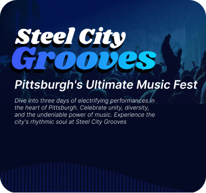
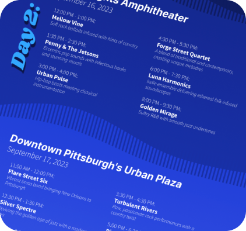

Steel City Grooves
UX Designer | 2023
Problem:
How do you create an engaging, concert-themed experience while still conveying important information?
Design Solution:
To preface, this project focused more on gaining experience in using visual design elements. When I think of concerts, I think of chaotic excitement, vibrant flashing colors, and a lively energy. I wanted to capture these feelings in my website design. A gradient with highly saturated blue colors was used. Long, flowing shapes were added to the background, which look similar to sound bars. These provide texture and frame each section.